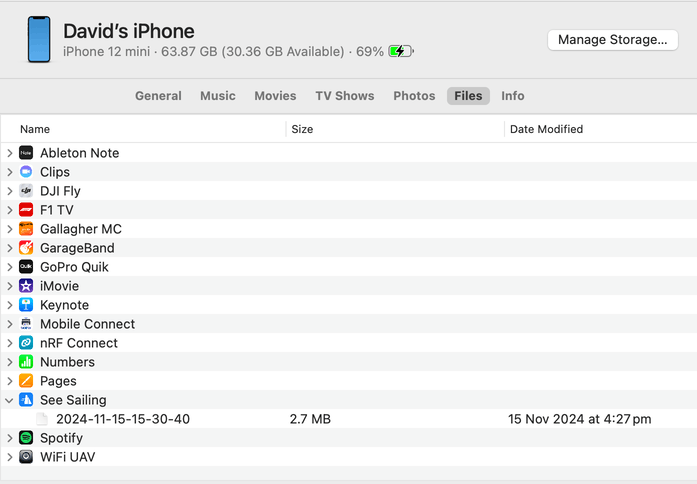
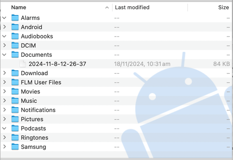

The easiest way to connect to NMEA 2000 is using a See Sailing hardware gateway. This page assumes you have one, and it is already installed following the instructions included in the box. If you need to obtain one, head to the "buy page" to either find a local agent or buy one directly. Postage worldwide is free!

The eventual "pattern" we are looking for is as above. See Sailing streams the data continuously to your phone across Bluetooth; and when you are back in range of land, or using a WiFi access point, you will be able to upload the data to the cloud service in one go.
It doesn't matter if you start the app first, or bring the electronics on your yacht live. For the sake of demonstration, let's assume you're on the boat, everything is powered up, and you've just started the app. You should see a screen like the one on the right.
Bluetooth shows which hardware gateway you're connected to, it should be the same as the number on the front of yours.
Position, Velocity Etc. are the individual channels of data being recorded. The channel light will turn blue and flicker when an update arrives. The frequency (ie 10hz) shows approximately how often these updates are arriving. An orange light is when the phone's sensors are being used to provide GPS information; and grey means no data is arriving on that channel.
Online shows whether the app found an Internet connection, and which account it has connected to. The app will continue to record data if the Internet connection is lost (or has not yet been found).
2025-11-7-16-1-45 is the first of a list of recordings contained in your phone. The '2025-etc' is the timestamp for when the recording started. The status is either "Recording", "Idle" or "Done" with a time showing the duration of the recording. "Recording" means that data is being actively added to a recording; "Idle" means data has stopped being added, but this is presumed to be a short term state; and "Done" means the recording is complete.
We will cover the 'tick' icon in a minute.
It is important to note that your online account is connected to the gateway and not a particular mobile phone. It is fine to have the See Sailing app installed on more than one phone, and on moving to 'another' phone for whatever reason the app will just need to be reinstalled without the need to move any account details over.
"Bluetooth" may say "Searching Bluetooth..." This means the app has either lost connectivity to the gateway or can't find it at all. Is the power on for the yacht's electronics? If you were connected, try moving the phone closer to where the gateway is installed.
BLE not enabled implies that either Bluetooth is switched off on your phone or possibly that the app does not have permission to use it. On some Android phones you need to enable "Location" to allow the app to use Bluetooth.
Note that there is no need to 'pair' your phone with the gateway.
"Online" may say "No network" The app has attempted to connect to the See Sailing server to verify your account but cannot. This is really not a problem and as soon as you get back in to mobile data or wifi range the "retry" button can be used to confirm that connectivity has been restored.
"Online" may say "No web subscription" This means the setup process for your gateway was not completed. Scan the QR code on the front of the gateway to be taken to a page where you can complete the setup process.
Recordings are either "ongoing" or "done". In the ongoing stage there is only one button...
The Tick marks the recording as being done. If data is still arriving it will create another recording automatically.
It is important to note that the "done" recordings only exist in the phone until they have been uploaded. Similarly, if you delete a recording from your phone, it will not be removed from the webservice (if that's what you're trying to do, see the management page).
The Cloud Button uploads a given recording to your cloud account. It will automatically start the analysis process and within a minute or two you will receive an email with a link to the recording on the web. If the button shows a green cloud with a tick then the recording has already been uploaded.
The Export Button copies the data from the recording from out of the app and into the 'files' area of your phone. This will work regardless of whether or not you have an online account or if it is active.
The Bin Button deletes this recording from your phone. There is no "undo" for this action.
I suggest you do your usual "dock out" procedures and get comfortable heading to the start line before starting the See Sailing app. Once you have started it, make sure you're receiving all the channels of data you're expecting then lock the phone, sleep it or whatever. The app will continue in the background and uses very little battery power in the process. After the race (or between races), open the app, click the green tick to mark the recording as "done" and click the cloud to upload. The recordings are not large (by modern standards) so can be uploaded over 4G mobile data comfortably, but there is also no problem with waiting until you next have WiFi connectivity and uploading it then instead.
On an iPhone you retrieve the files by connecting the phone and looking under the 'files' tab like this...
On Android use a file transfer utility such as "Android File Transfer" and your exports will be under the "Documents" directory...
The exported data format is described on the technical page.